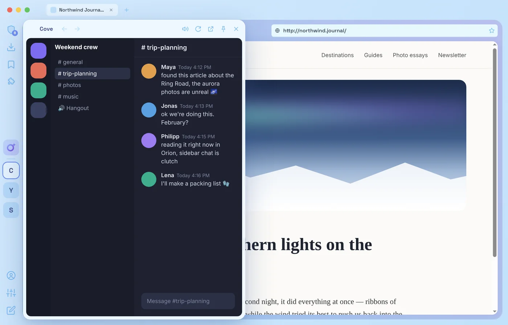

Sidebar apps
Your apps, one click away
Discord, YouTube, Spotify and any site you pin open in a floating window beside the page, like Opera GX. They stay signed in and keep playing when you hide them. Pin the window to dock it next to the page.
